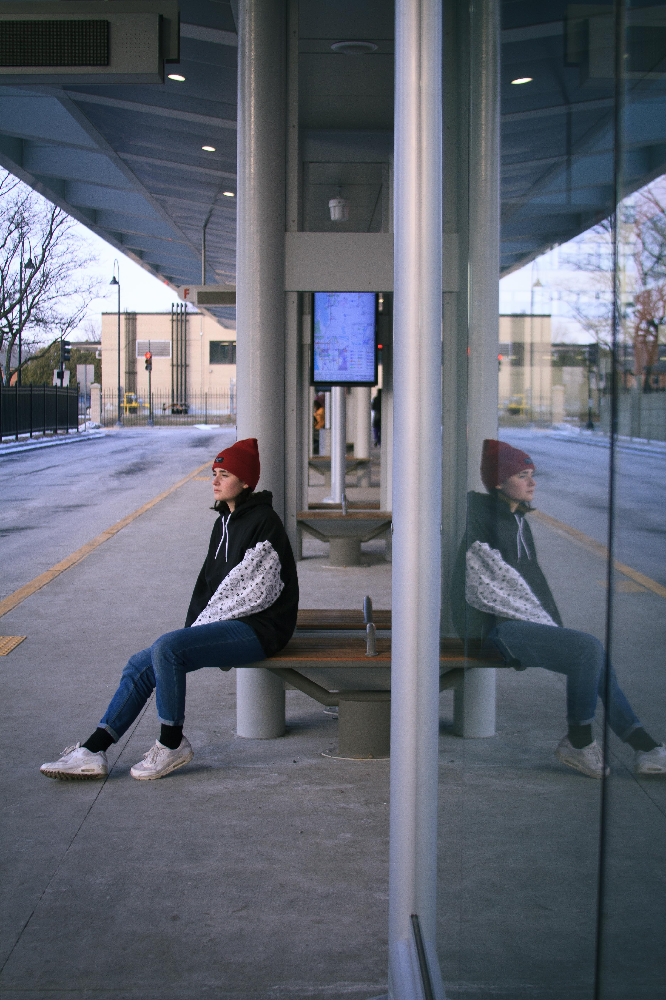

Since discovering my parents old film cameras, I've been hooked on photography. Coming from a semi-rural town in Connecticut I love to spend time outside taking pictures of whatever I can. I made this website to document and remind myself of some of the best times I've had through the lens of photography, literally. I hope to continue to add to this website in the future, as a sort of public photo album with my name slapped on it. Each of these photos has its own story behind it and personally working and creating this website regularly fills my mind with the many good memories made

Lauterbrunnen, Switzerland
This spring I went to switzerland with my dad to visit family, and it was one of the best experiences of my life. This is my favorite shot from that trip

The Swiss alps, taken along a trail in north-west Switzerland. My family and I hiked 2 miles to a tower on top of a hill where you could see both the alps to the South East and France to the west

White Mountains National Park, New Hampshire
This last spring I took a road trip with some of closest friends all accross the east coast. Its one of my favorite memories I have with friends, and this is one of my favorite shots from that trip

Mount Washington, New Hampshire
Despite it being the middle of july, the top of the mountain was around 30 degrees. We happened to get lucky and go on one of clearest days of the year

Another one of my favorite images from the top of mount Washington

Fishers Island, NY
Fishers is one of my favorite hidden places to go on adventures with friends. Fishers Island used to be the island the protected the entractance of long island sound during WWII that is since decomissioned. There are still many standing bunkers and batteries around the island to explore, and since not many people knmow about it, its suprisingly well preserved
Kent Falls State Park, Connecticut
If you'd like to me to take any photos for you, I'm always open for side work. Feel free to ask if you have any questions
If you need to contact me email me at hschaer18@gmail.com, or text me at 203-501-7033